Bigdata
Hadoop
-
Hadoop 是一个开源分布式计算平台，为用户提供了系统底层细节透明的分布式基础架构
-
Hadoop 的核心是 HDFS 和 MapReduce
Hadoop 的项目结构不断丰富发展，已经形成一个丰富的 Hadoop 生态系统
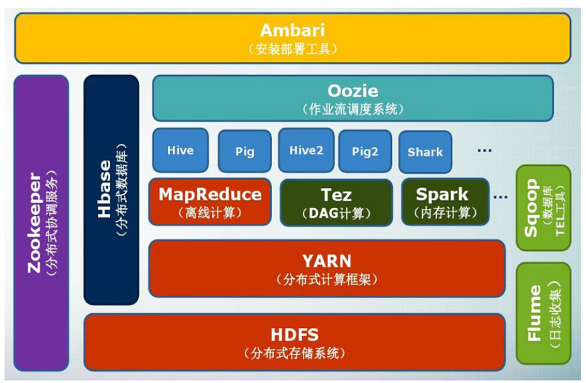
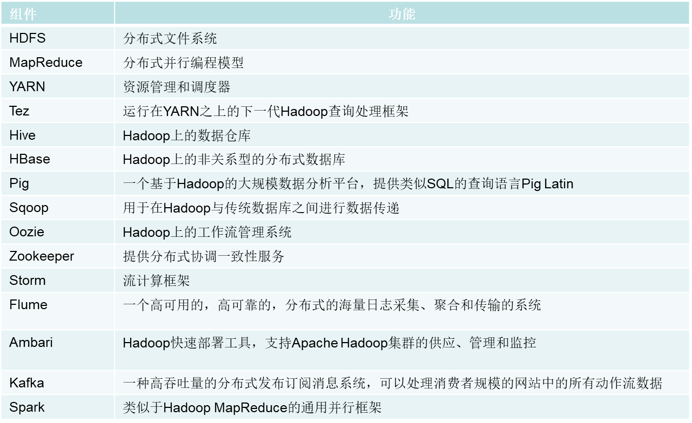
HDFS
hdfs 的实现目的是：1. 兼容廉价硬件设备、2. 实现流数据读写、3. 支持大数据集、4. 支持简单的文件模型、5. 跨平台兼容性。
局限性：不适合低延迟数据访问，无法高效存储大量小数据，不支持多用户写入随意修改文件
分布式文件系统在物理结构上是由计算机集群中的多个节点构成的，这些节点分为两类，一类叫“主节点”(Master Node)或者也被称为“名称结点”(NameNode)，另一类叫“从节点”（Slave Node）或者也被称为“数据节点”(DataNode)
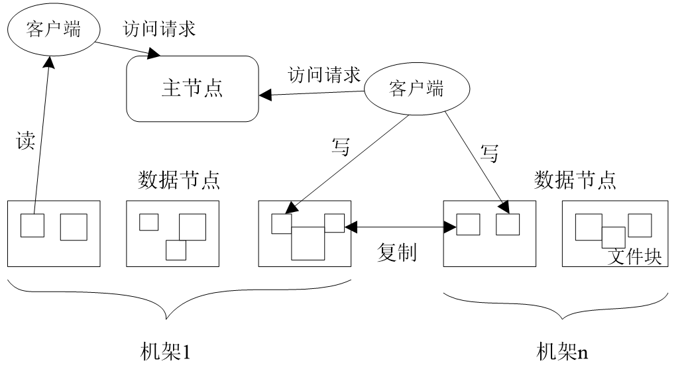
在 HDFS 中，名称节点（NameNode）负责管理分布式文件系统的命名空间（Namespace），保存了两个核心的数据结构，即 FsImage 和 EditLog
-
FsImage 会存储文件复制等级、访问和修改时间、访问权限、块大小以及组成文件到块。
-
EditLog 中记录了所有针对文件的创建、删除、重命名等操作。（磁盘的随机写 -> 为内存写+磁盘顺序写）
这两个结构会被持久化到磁盘上，NameNode 在启动是会加载 FsImage 并将 EditLog 中的修改日志应用到读取到的数据上。关于每个文件中各个块所在的数据节点的位置信息，并不会持久化，每当一个数据节点加入到集群中会向 NameNode 报告它拥有哪些数据块。
随着修改不断进行，EditLog 会不断增大，为了解决该问题，HDFS 使用一个额外的节点 SecondaryNameNode 来做日志的 checkpoint。流程如下：
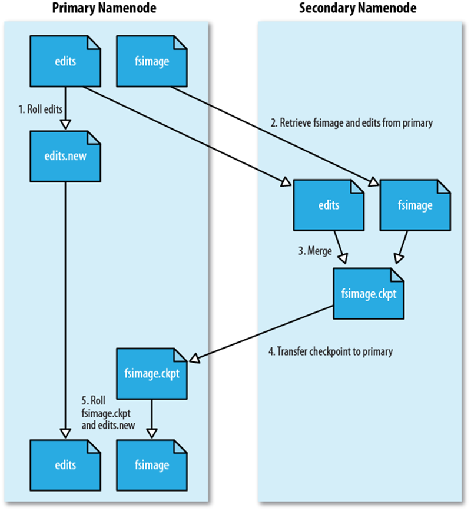
*采用块的好处
HDFS采用抽象的块概念可以带来以下几个明显的好处：
-
支持大规模文件存储：文件以块为单位进行存储，一个大规模文件可以被分拆成若干个文件块，不同的文件块可以被分发到不同的节点上，因此，一个文件的大小不会受到单个节点的存储容量的限制，可以远远大于网络中任意节点的存储容量
-
简化系统设计：首先，大大简化了存储管理，因为文件块大小是固定的，这样就可以很容易计算出一个节点可以存储多少文件块；其次，方便了元数据的管理，元数据不需要和文件块一起存储，可以由其他系统负责管理元数据
-
适合数据备份：每个文件块都可以冗余存储到多个节点上，大大提高了系统的容错性和可用性
*block副本的存放策略
通常一个数据块的多个副本会被分布到不同的数据节点上，存放策略如下：
-
第一个副本：放置在上传文件的数据节点；如果是集群外提交，则随机挑选一台磁盘不太满、CPU不太忙的节点
-
第二个副本：放置在与第一个副本不同的机架的节点上
-
第三个副本：与第一个副本相同机架的其他节点上
-
更多副本：随机节点
错误处理
节点错误，数据错误
*读数据
import java.io.BufferedReader;
import java.io.InputStreamReader;
import org.apache.hadoop.conf.Configuration;
import org.apache.hadoop.fs.FileSystem;
import org.apache.hadoop.fs.Path;
import org.apache.hadoop.fs.FSDataInputStream;
public class Chapter3 {
public static void main(String[] args) {
try {
Configuration conf = new Configuration();
conf.set("fs.defaultFS","hdfs://localhost:9000");
conf.set("fs.hdfs.impl","org.apache.hadoop.hdfs.DistributedFileSystem");
FileSystem fs = FileSystem.get(conf);
Path file = new Path("test");
FSDataInputStream getIt = fs.open(file);
BufferedReader d = new BufferedReader(new InputStreamReader(getIt));
String content = d.readLine(); //读取文件一行
System.out.println(content);
d.close(); //关闭文件
fs.close(); //关闭 hdfs
} catch (Exception e) {
e.printStackTrace();
}
}
}
流程如下：
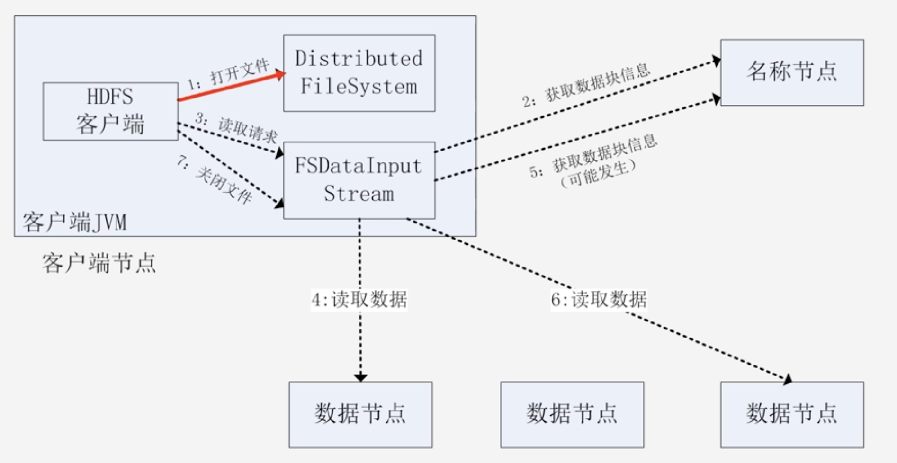
*写数据
import org.apache.hadoop.conf.Configuration;
import org.apache.hadoop.fs.FileSystem;
import org.apache.hadoop.fs.FSDataOutputStream;
import org.apache.hadoop.fs.Path;
public class Chapter3 {
public static void main(String[] args) {
try {
Configuration conf = new Configuration();
conf.set("fs.defaultFS","hdfs://localhost:9000");
conf.set("fs.hdfs.impl","org.apache.hadoop.hdfs.DistributedFileSystem");
FileSystem fs = FileSystem.get(conf);
byte[] buff = "Hello world".getBytes(); // 要写入的内容
String filename = "test"; //要写入的文件名
FSDataOutputStream os = fs.create(new Path(filename));
os.write(buff,0,buff.length);
System.out.println("Create:"+ filename);
os.close();
fs.close();
} catch (Exception e) {
e.printStackTrace();
}
}
}
HBase
HBase 是一个列式存储的分布式数据库，是谷歌 BigTable 的开源实现，主要用来存储非结构化和半结构化的松散数据。
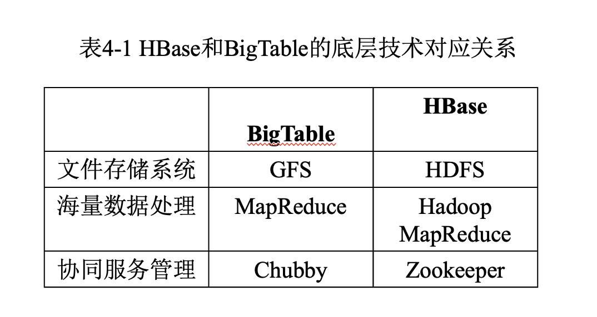
为什么需要 HBase?
Hadoop 可以很好地解决大规模数据的离线批量处理问题，但是，受限于 Hadoop MapReduce 编程框架的高延迟数据处理机制，使得 Hadoop 无法满足大规模数据实时处理应用的需求
我们可以通过以下方式访问 HBase 中的数据：
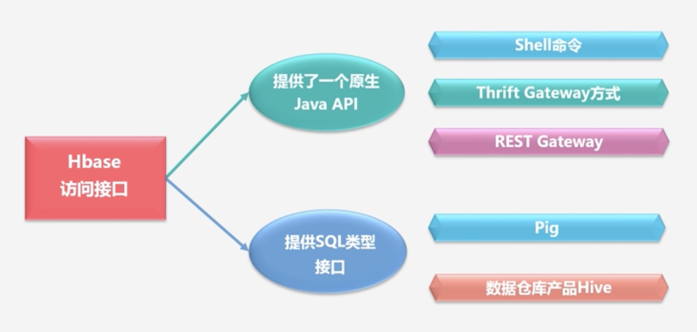
HBase 是一个稀疏、多维度、排序的映射表，这张表的索引是行键、列族、列限定符和时间戳
数据模型
HBase 中的数据模型如下：

-
表：HBase 采用表来组织数据，表由行和列组成，列划分为若干个列族；
-
行：每个 HBase 表都由若干行组成，每个行由行键（row key）来标识；
-
列族：一个 HBase 表被分组成许多“列族”（Column Family）的集合，它是基本的访问控制单元；
-
列限定符：列族里的数据通过列限定符（或列）来定位；
-
单元格：在 HBase 表中，通过行、列族和列限定符确定一个“单元格”（cell），单元格中存储的数据没有数据类型，总被视为字节数组 byte[]；
-
时间戳：每个单元格都保存着同一份数据的多个版本，这些版本采用时间戳进行索引。
*实现原理
HBase 的功能组件如下：
（1）库函数：链接到每个客户端
（2）一个 Master 主服务器：主服务器 Master 负责管理和维护 HBase 表的分区信息，维护 Region 服务器列表，分配 Region，负载均衡；
（3）许多个 Region 服务器：负责存储和维护分配给自己的 Region，处理来自客户端的读写请求
客户端并不是直接从 Master 主服务器上读取数据，而是在获得 Region 的存储位置信息后，直接从 Region 服务器上读取数据，客户端并不依赖 Master，而是通过 Zookeeper 来获得 Region 位置信息，大多数客户端甚至从来不和 Master 通信，这种设计方式使得 Master 负载很小。
同一个 Region 不会被分拆到多个 Region 服务器，每个 Region 服务器存储 10-1000 个 Region。
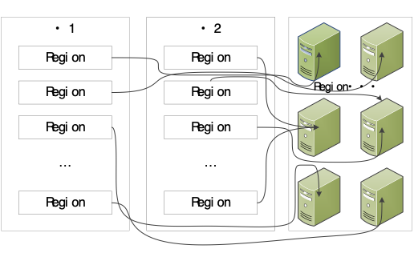
未来找到每个 Region 的具体位置，HBase 要向客户端提供 Region 和 Region 服务器 的映射关系表，也就是 .META. 表，为了防止 META 表过大，导致一个 Region 都存不下其本身，所以 HBase 构建了三层结构：
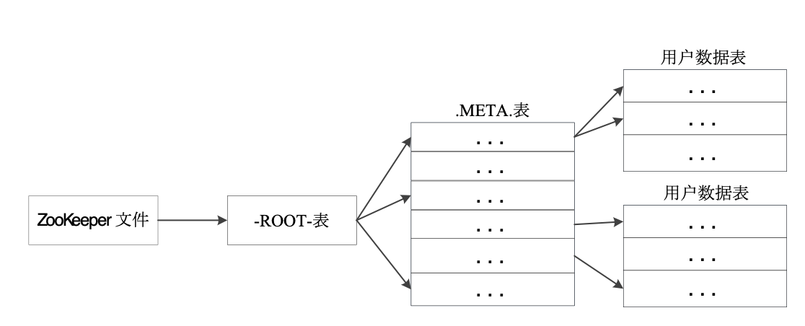
各层次作用如下：
-
Zookeeper：记录 ROOT 表的位置信息
-
ROOT表：记录了.META.表的Region位置信息，ROOT 中的数据表只能在一个Region中。通过ROOT表，就可以访问.META.表中的数据
-
.META.表：记录了用户数据表的 Region 位置信息，.META.表可以有多个 Region，保存了 HBase 中所有用户数据表的Region 位置信息。
下面是 HBase 的系统架构：
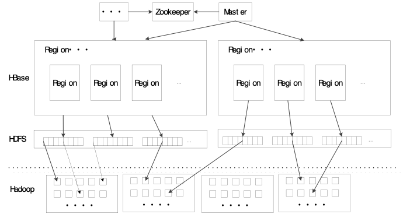
-
客户端：客户端包含访问 HBase 的接口，同时在缓存中维护着已经访问过的 Region 位置信息，用来加快后续数据访问过程
-
Zookeeper 服务器：Zookeeper 可以帮助选举出一个 Master 作为集群的总管，并保证在任何时刻总有唯一一个 Master 在运行，这就避免了 Master 的“单点失效”问题，Zookeeper 是一个很好的集群管理工具，被大量用于分布式计算，提供配置维护、域名服务、分布式同步、组服务等。
-
Master：主服务器 Master 主要负责表和 Region 的管理工作：
-
管理用户对表的增加、删除、修改、查询等操作
-
实现不同 Region 服务器之间的负载均衡
-
在 Region 分裂或合并后，负责重新调整 Region 的分布
-
对发生故障失效的 Region 服务器上的 Region 进行迁移
-
-
Region 服务器：Region 服务器是 HBase 中最核心的模块，负责维护分配给自己的 Region，并响应用户的读写请求
Region 服务器
Region 服务器的工作原理如下：
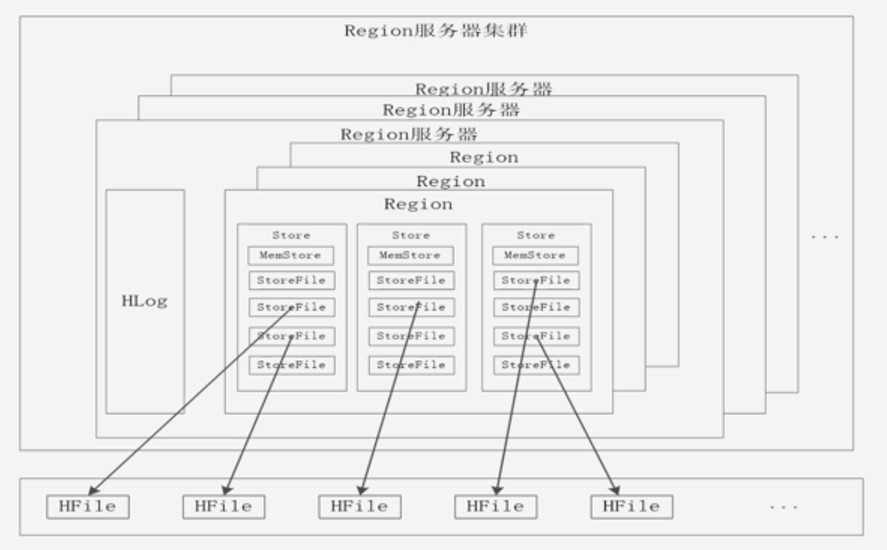
每个 Region 都存储用户表中的一部分数据，在 Region 内部，每个列族都对应一个 Store，每次 MemStore 写磁盘时都会生成一个 StoreFile，数量太多时，会影响查找速度，HBase 会调用 Store.compact() 把多个合并成一个，合并操作是比较耗费资源的，只有数量达到一个阈值才启动合并。
当 Store 中的数据不断增加，会导致 Region 过大，HBase 就会将 Region 分裂，相应的 Store 也会分裂。
用户读写数据过程：
-
用户写入数据时，被分配到相应 Region 服务器去执行
-
用户数据首先被写入到 MemStore 和 Hlog 中
-
只有当操作写入 Hlog 之后，commit() 调用才会将其返回给客户端
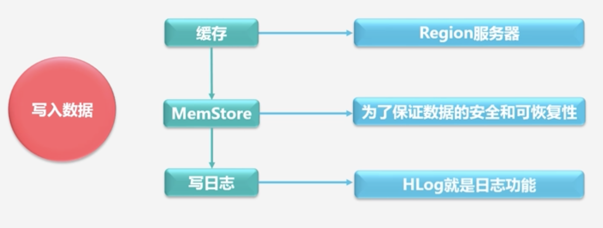
- 当用户读取数据时，Region 服务器会首先访问 MemStore 缓存，如果找不到，再去磁盘上面的 StoreFile 中寻找
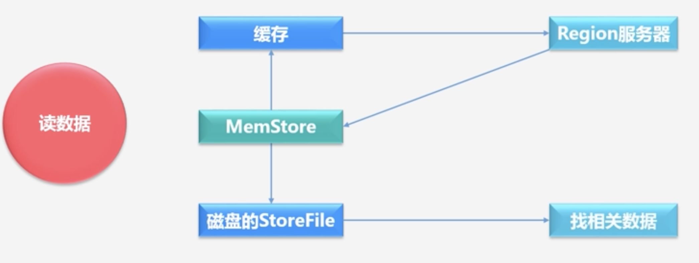
缓存的刷新过程：
-
系统会周期性地把 MemStore 缓存里的内容刷写到磁盘的 StoreFile 文件中，清空缓存，并在 Hlog 里面写入一个标记
-
每次刷写都生成一个新的 StoreFile 文件，因此，每个 Store 包含多个 StoreFile 文件
-
每个 Region 服务器都有一个自己的 HLog 文件，每次启动都检查该文件，确认最近一次执行缓存刷新操作之后是否发生新的写入操作；如果发现更新，则先写入 MemStore，再刷写到 StoreFile，最后删除旧的 Hlog 文件，开始为用户提供服务；
Java API
我们要通过 Java API 创建如下的表：
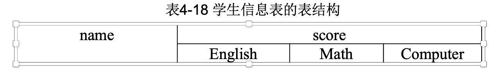
再插入如下数据： 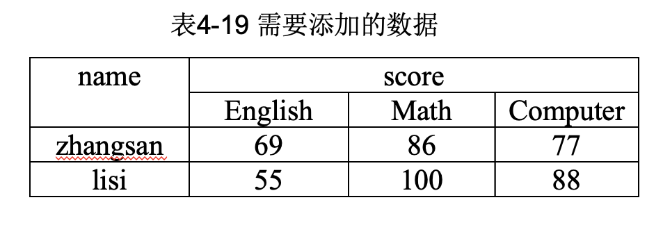
import org.apache.hadoop.conf.Configuration;
import org.apache.hadoop.hbase.*;
import org.apache.hadoop.hbase.client.*;
import org.apache.hadoop.hbase.util.Bytes;
import java.io.IOException;
public class Chapter4{
public static Configuration configuration;
public static Connection connection;
public static Admin admin;
public static void main(String[] args)throws IOException {
createTable(“student”,new String[]{“score”});
insertData(“student”,“zhangsan”,“score”,“English”,“69”);
insertData(“student”,“zhangsan”,“score”,“Math”,“86”);
insertData(“student”,“zhangsan”,“score”,“Computer”,“77”);
getData(“student”, “zhangsan”, “score”, “English”);
}
//建立连接
public static void init(){
configuration = HBaseConfiguration.create();
configuration.set("hbase.rootdir","hdfs://localhost:9000/hbase");
try{
connection = ConnectionFactory.createConnection(configuration);
admin = connection.getAdmin();
}catch (IOException e){
e.printStackTrace();
}
}
//关闭连接
public static void close() {
try {
if(admin != null){
admin.close();
}
if(null != connection){
connection.close();
}
} catch (IOException e){
e.printStackTrace();
}
}
/*创建表*/
/**
* @param myTableName 表名
* @param colFamily列族数组
* @throws Exception
*/
public static void createTable(String myTableName,String[] colFamily) throws IOException {
TableName tableName = TableName.valueOf(myTableName);
if(admin.tableExists(tableName)){
System.out.println("table exists!");
}else {
HTableDescriptor hTableDescriptor = new HTableDescriptor(tableName);
for(String str: colFamily){
HColumnDescriptor hColumnDescriptor = new HColumnDescriptor(str);
hTableDescriptor.addFamily(hColumnDescriptor);
}
admin.createTable(hTableDescriptor);
}
}
/*添加数据*/
/**
* @param tableName 表名
* @param rowKey 行键
* @param colFamily 列族
* @param col 列限定符
* @param val 数据
* @throws Exception
*/
public static void insertData(String tableName, String rowKey, String colFamily, String col, String val) throws IOException {
init();
Table table = connection.getTable(TableName.valueOf(tableName));
Put put = new Put(Bytes.toBytes(rowkey));
put.addColumn(Bytes.toBytes(colFamily), Bytes.toBytes(col), Bytes.toBytes(val));
table.put(put);
table.close();
close();
}
/*获取某单元格数据*/
/**
* @param tableName 表名
* @param rowKey 行键
* @param colFamily 列族
* @param col 列限定符
* @throws IOException
*/
public static void getData(String tableName,String rowKey,String colFamily,String col)throws IOException{
init();
Table table = connection.getTable(TableName.valueOf(tableName));
Get get = new Get(Bytes.toBytes(rowkey));
get.addColumn(Bytes.toBytes(colFamily),Bytes.toBytes(col));
//获取的result数据是结果集，还需要格式化输出想要的数据才行
Result result = table.get(get);
System.out.println(
new String(
result.getValue(colFamily.getBytes(), col == null ? null : col.getBytes())
)
);
table.close();
close();
}
}
NoSQL
传统关系型数据库的缺陷：
-
无法满足海量数据的管理需求
-
无法满足数据高并发的需求
-
无法满足高可扩展性和高可用性的需求
NoSQL 的四大类型：
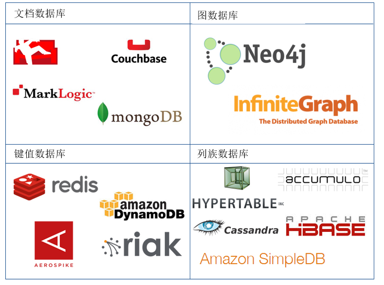
*CAP 理论
-
C（Consistency）：一致性，是指任何一个读操作总是能够读到之前完成的写操作的结果；
-
A:（Availability）：可用性，是指快速获取数据，可以在确定的时间内返回操作结果，保证每个请求不管成功或者失败都有响应；
-
P（Tolerance of Network Partition）：分区容忍性，是指当出现网络分区的情况时，分离的系统也能够正常运行，也就是说，系统中任意信息的丢失或失败不会影响系统的继续运作。
CAP 理论告诉我们，一个分布式系统不可能同时满足一致性、可用性和分区容忍性这三个需求，最多只能同时满足其中两个，正所谓“鱼和熊掌不可兼得”。
*BASE 理论
BASE 即：基本可用（Basically Availble）、软状态（Soft-state）、最终一致性（Eventual consistency）；
-
基本可用：基本可用，是指一个分布式系统的一部分发生问题变得不可用时，其他部分仍然可以正常使用，也就是允许分区失败的情形出现
-
软状态：“软状态（soft-state）”是与“硬状态（hard-state）”相对应的一种提法。数据库保存的数据是“硬状态”时，可以保证数据一致性，即保证数据一直是正确的。“软状态”是指状态可以有一段时间不同步，具有一定的滞后性
-
最终一致性：允许后续的访问操作可以暂时读不到更新后的数据，但是经过一段时间之后，必须最终读到更新后的数据。
NewSQL
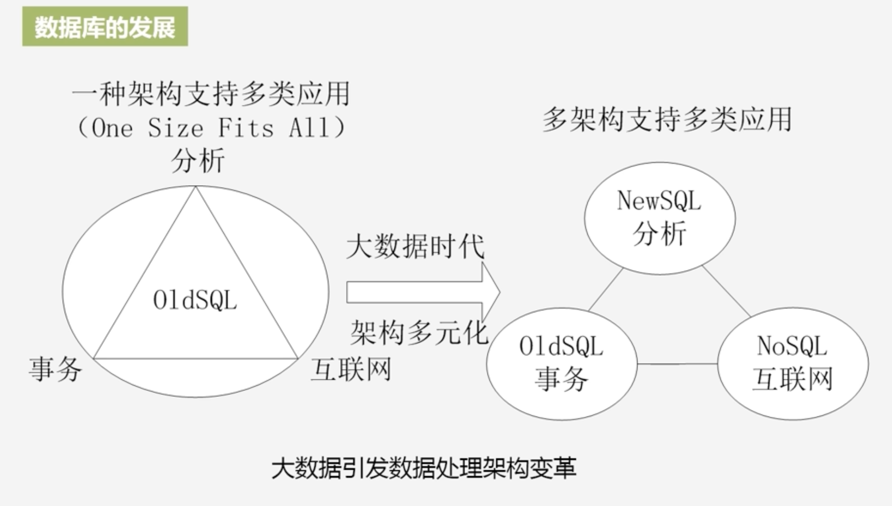
NewSQL 有如下优点：
-
良好的水平拓展性；
-
强一致性；
-
事物；
-
SQL 查询；
-
海量数据存储。
MongoDB
MongoDB 是一个基于分布式文件存储的开源数据库系统。MongoDB 文档类似于 JSON 对象。字段值可以包含其他文档，数组及文档数组。
在 mongodb 中基本的概念是文档、集合、数据库：
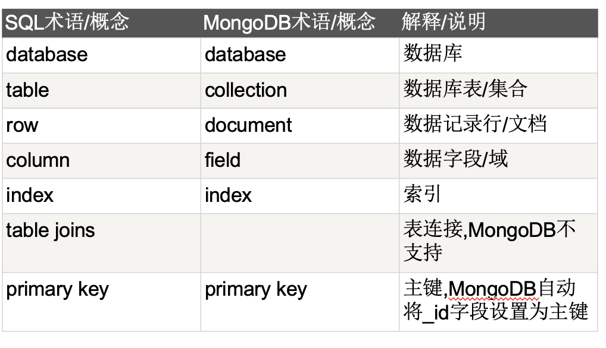
以下是传统关系型数据库与 MongoDB 的数据模型的不同：
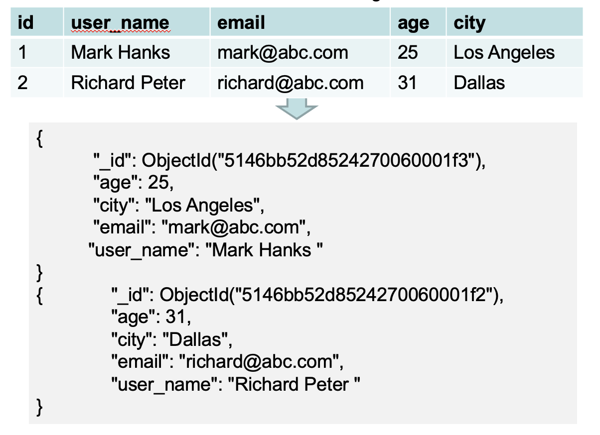
MongoDB 数据类型：
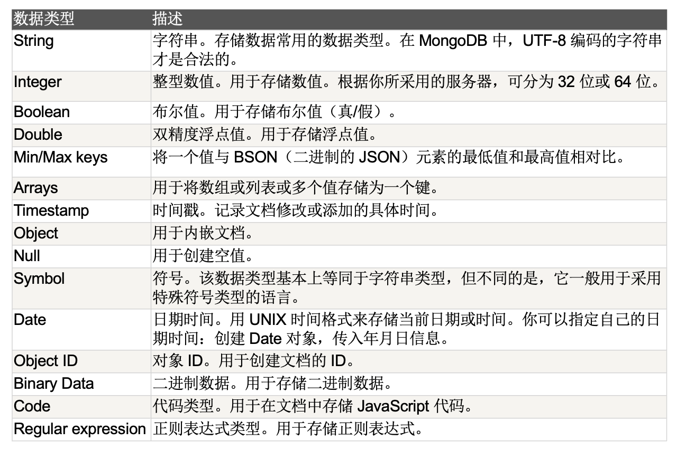
使用 JAVA API 访问 MongoDB 的代码如下：
连接数据库
public class MongoDBJDBC{
public static void main( String args[] ){
try{
// 连接到 mongodb 服务
MongoClient mongoClient = new MongoClient( "localhost" , 27017 );
// 连接到数据库
DB db = mongoClient.getDB( "test" );
System.out.println("Connect to database successfully");
boolean auth = db.authenticate(myUserName, myPassword);
System.out.println("Authentication: "+auth);
}catch(Exception e){
System.err.println( e.getClass().getName() + ": " + e.getMessage() );
}
}
}
创建集合
public class MongoDBJDBC{
public static void main( String args[] ){
try{
// 连接到 mongodb 服务
MongoClient mongoClient = new MongoClient( "localhost" , 27017 );
// 连接到数据库
DB db = mongoClient.getDB( "test" );
System.out.println("Connect to database successfully");
boolean auth = db.authenticate(myUserName, myPassword);
System.out.println("Authentication: "+auth);
DBCollection coll = db.createCollection("mycol");
System.out.println("Collection created successfully");
}catch(Exception e){
System.err.println( e.getClass().getName() + ": " + e.getMessage() );
}
}
}
插入文档
public class MongoDBJDBC{
public static void main( String args[] ){
try{
// 连接到 mongodb 服务
MongoClient mongoClient = new MongoClient( "localhost" , 27017 );
// 连接到数据库
DB db = mongoClient.getDB( "test" );
System.out.println("Connect to database successfully");
boolean auth = db.authenticate(myUserName, myPassword);
System.out.println("Authentication: "+auth);
DBCollection coll = db.getCollection("mycol");
System.out.println("Collection mycol selected successfully");
BasicDBObject doc = new BasicDBObject("title", "MongoDB").
append("description", "database").
append("likes", 100).
append("url", "http://www.w3cschool.cc/mongodb/").
append("by", "w3cschool.cc");
coll.insert(doc);
System.out.println("Document inserted successfully");
}catch(Exception e){
System.err.println( e.getClass().getName() + ": " + e.getMessage() );
}
}
}
MapReduce
MapReduce 是一种分布式的批处理计算框架，采用“分而治之”策略。
MapReduce体系结构主要由四个部分组成，分别是：Client、JobTracker、TaskTracker以及Task
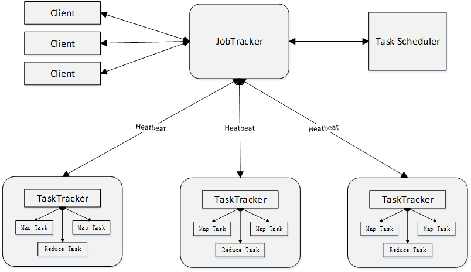
*Shuffle 流程
每个执行 Map 任务的 Worker 会分配一个缓存（默认100MB），每个
输出会首先写入到内存缓冲区中，当超过一定的阈值时会将缓冲区数据按 key 排序后写入磁盘，当磁盘文件数量超过预定值时（默认是 3），会进行文件合并，合并时依然会按照 key 的顺序进行归并。
在每次合并时会执行 combiner，这是用户提供的合并函数，会对相同 key 的 value 进行一次合并，具体的合并操作由用户决定，大多是和 Reduce 相同的操作，来减少网络传输的数据量，减轻 Reduce 的压力。
Map 任务都完成后，Reduce 会通过 RPC 像 JobTracker 询问其所在分区的所有 key 的位置，远程获取到来自不同 Map 机器上的数据后，将来自不同机器的数据按照 key 先进行一次归并排序（如果数据量过大要进行外排序）。之后交给用户定义的 Reduce 函数处理即可。
*WordCount 实现
WordCount
import java.io.IOException;
import java.util.StringTokenizer;
import org.apache.hadoop.conf.Configuration;
import org.apache.hadoop.fs.Path;
import org.apache.hadoop.io.IntWritable;
import org.apache.hadoop.io.Text;
import org.apache.hadoop.mapreduce.Job;
import org.apache.hadoop.mapreduce.Mapper;
import org.apache.hadoop.mapreduce.Reducer;
import org.apache.hadoop.mapreduce.lib.input.FileInputFormat;
import org.apache.hadoop.mapreduce.lib.output.FileOutputFormat;
import org.apache.hadoop.util.GenericOptionsParser;
// 主类 WordCount
public class WordCount {
// 自定义 Mapper 类：输入键值对<Object, Text>，输出键值对<Text, IntWritable>
public static class MyMapper extends Mapper<Object, Text, Text, IntWritable> {
// 每个单词计数为 1，定义一个常量
private final static IntWritable one = new IntWritable(1);
private Text word = new Text();
// map 方法处理每一行文本
public void map(Object key, Text value, Context context) throws IOException, InterruptedException {
// 使用空格分隔每一行的单词
StringTokenizer itr = new StringTokenizer(value.toString());
while (itr.hasMoreTokens()) {
// 提取下一个单词
word.set(itr.nextToken());
// 输出 <单词, 1>
context.write(word, one);
}
}
}
// 自定义 Reducer 类：将相同 key（单词）的所有 1 进行求和
public static class MyReducer extends Reducer<Text, IntWritable, Text, IntWritable> {
private IntWritable result = new IntWritable();
public void reduce(Text key, Iterable<IntWritable> values, Context context) throws IOException, InterruptedException {
int sum = 0;
// 遍历所有 value，对同一个单词的出现次数求和
for (IntWritable val : values) {
sum += val.get();
}
result.set(sum);
// 输出 <单词, 总次数>
context.write(key, result);
}
}
// 主方法：配置并提交作业
public static void main(String[] args) throws Exception {
Configuration conf = new Configuration();
// 解析通用参数，例如 -D 设置参数
String[] otherArgs = new GenericOptionsParser(conf, args).getRemainingArgs();
// 检查输入输出路径参数是否正确
if (otherArgs.length != 2) {
System.err.println("Usage: wordcount <in> <out>");
System.exit(2);
}
// 创建 Job 实例并命名
Job job = new Job(conf, "word count");
job.setJarByClass(WordCount.class); // 设置主类
job.setMapperClass(MyMapper.class); // 设置 Mapper 类
job.setReducerClass(MyReducer.class); // 设置 Reducer 类
// 设置 Map 和 Reduce 的输出类型
job.setOutputKeyClass(Text.class);
job.setOutputValueClass(IntWritable.class);
// 设置输入输出路径
FileInputFormat.addInputPath(job, new Path(otherArgs[0])); // 输入路径
FileOutputFormat.setOutputPath(job, new Path(otherArgs[1])); // 输出路径
// 提交任务并等待执行结果
System.exit(job.waitForCompletion(true) ? 0 : 1);
}
}
Spark
*Spark架构组成
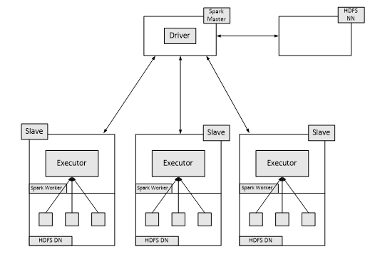
cluster manager，driver，executor，work node
*RDD操作
RDD（Resilient Distributed Dataset）叫做弹性分布式数据集，是Spark中最基本的数据抽象，它代表一个不可变、可分区、里面的元素可并行计算的集合。
转换操作：对于RDD而言，每一次转换操作都会产生不同的RDD，供给下一个“转换”使用
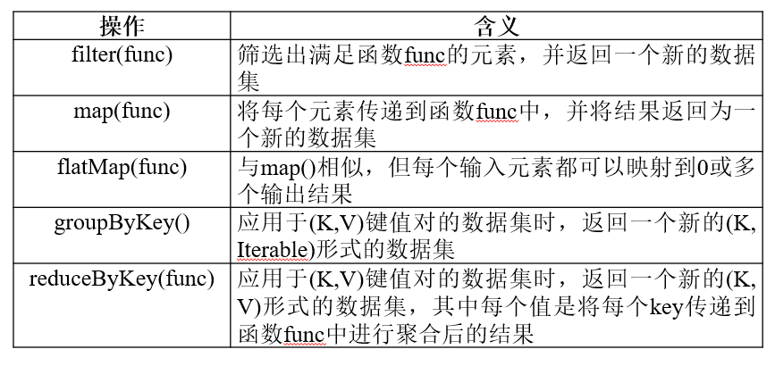
转换操作是惰性求值的，只有遇到行动操作时，才会正在进行转换计算。
行动操作：行动操作是真正触发计算的地方。
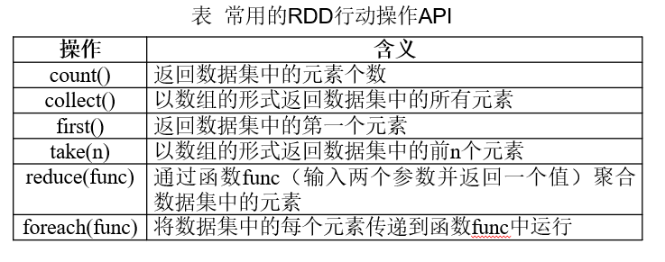
Hive
数据仓库
数据仓库：数据仓库（Data Warehouse）是一个面向主题的（Subject Oriented）、集成的（Integrated）、相对稳定的（Non-Volatile）、反映历史变化（Time Variant）的数据集合，用于支持管理决策。
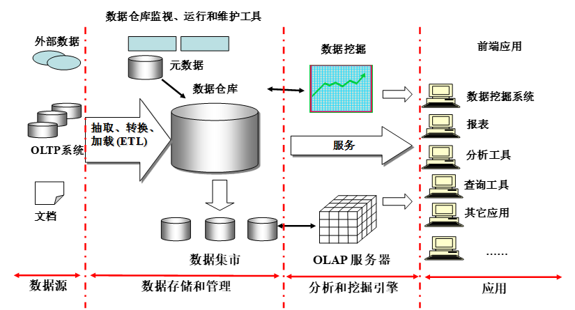
数据仓库中的数据是相对稳定的，是大量的历史数据，从数据源中加载到数据仓库后，就不在变化了。通过一些数据分析工具（OLAP 数据库等），得到数据报表等，来支撑企业的决策。
Hive 依赖分布式文件系统HDFS存储数据，依赖分布式并行计算模型 MapReduce 处理数据，依赖分布式文件系统 HDFS 存储数据。
Hive 本身不支持数据存储和处理，只提供一种 HiveQL （类似 SQL）的语言来定义计算过程。 Hive 特性：
-
采用批处理方式处理海量数据：Hive 会将 HiveQL 转化为 MapReduce 任务来进行运行。
-
提供适合数据仓库操作的工具
系统架构
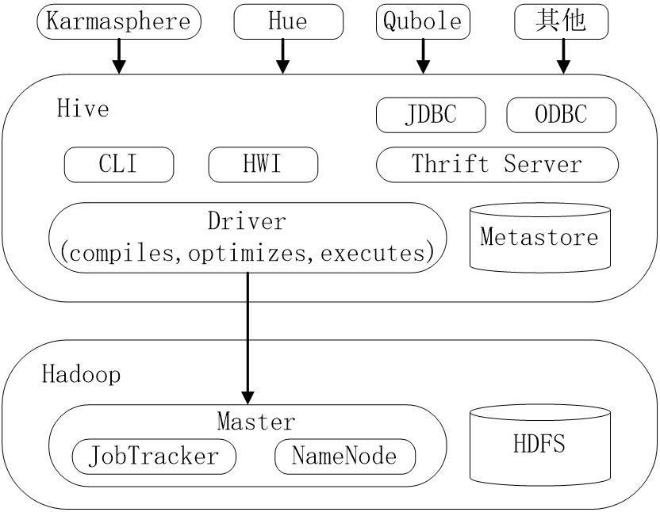
-
用户接口模块包括CLI（命令行工具）、HWI（Hive Web Interface）、JDBC、ODBC、Thrift Server（RPC 调用）
-
驱动模块（Driver）包括编译器、优化器、执行器等，负责把HiveSQL语句转换成一系列MapReduce作业
-
元数据存储模块（Metastore）是一个独立的关系型数据库（自带derby数据库，或MySQL数据库）